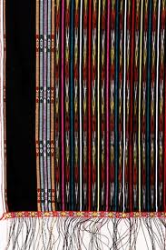
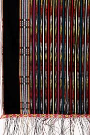

Kain Ulos merupakan kain tradisional dari suku Batak Toba. Kain ulos dibuat dengan cara di tenun biasanya di tenun oleh wanita Batak hingga menghasilkan pola yang beragam.
Ulos adalah kain tenun tradisional Batak yang memiliki nilai budaya dan ritual sebagai salah satu warisan Batak.
Ulos adalah tenun tradisional Batak yang berarti selimut (Panggabean, 2009). Aslinya berupa selendang besar yang memiliki nilai budaya dan ritual sebagai salah satu warisan Batak. Ragam nilai tersebut tercermin dari ragam corak ulos yang ada.
Sebagai tenun tradisional Batak, Ulos memiliki peran penting dalam setiap upacara adat Batak. Ulos pada awalnya digunakan sebagai kain sehari-hari dan selimut oleh orang Batak untuk menghangatkan tubuh mereka. Saat ini, istilah "mangUlosi" telah diperkenalkan untuk menunjukkan makna penyerahan Ulos kepada seseorang untuk menghangatkan hidup mereka. Secara implisit istilah tersebut memiliki makna yang lebih bermakna seperti mengucapkan doa, harapan terbaik, cinta, dan peduli.
Menurut Sumardjo (2002), Ulos adalah selendang tenun Batak berukuran besar dengan dimensi panjang dan lebar tertentu. Ukurannya disesuaikan dengan penempatannya di badan: dililitkan di kepala (dililithon), dibaringkan di bahu (sampe-sampe atau dihadang), atau dililitkan di pinggang (diabithon). Ia mengklasifikasikan Ulos sebagai lambang adat Batak yang berbentuk artefak (beton).
Menurut Sihombing (1997), Ulos mengandung nilai-nilai religius. Proses menenun dimulai dengan doa, harapan, imajinasi, pengetahuan, keterampilan, dan kesabaran sehingga Ulos dapat digunakan sebagai media untuk menyampaikan doa dan keinginan kepada Tuhan.
Pardosi (2008) mendefinisikan Ulos sebagai kain religi yang bertuah. Oleh karena itu, ada beberapa persyaratan dan pantangan yang harus diikuti dalam proses menenun. Detail seperti panjang dan lebar harus disesuaikan untuk membawa kedamaian dan berkah; jika tidak, itu bisa membawa kematian atau nasib buruk.
Dari ketiga perspektif yang berbeda tersebut, dapat disimpulkan bahwa Ulos memiliki banyak makna budaya dalam tradisi Batak, yang mengandung nilai etika, estetika, dan religi. Nilai-nilai etis bertujuan untuk membangun perdamaian dan harmonisasi di antara masyarakat Batak. Saat ini Ulos telah digunakan sebagai hadiah kepada orang atau tamu istimewa untuk menunjukkan rasa hormat, perhatian, atau cinta, tidak terbatas pada orang Batak saja tetapi untuk etika lain di Indonesia dan juga orang asing. Nilai estetika tercermin dari keindahan motif Ulos. Saat ini, Ulos tidak hanya digunakan untuk upacara adat Batak saja tetapi juga dalam berbagai fungsi lainnya seperti gaun, kemeja, dan aksesoris.